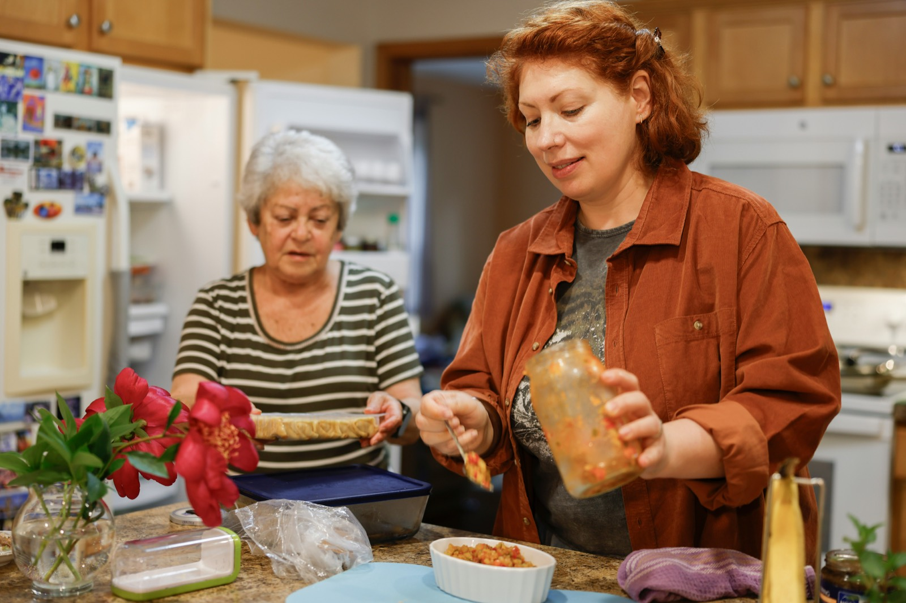

A few hours of respite
Time to rest, work, or run errands.
For families
Many families don’t want to hand over care completely. They need dependable help for a few hours, with certain routines, or when work, appointments, children, or distance get in the way.

Family caregiver support
Time to rest, work, or run errands.
When your loved one shouldn’t be alone for long.
Dressing, grooming, meals, and mobility help.
For appointments and outings you cannot make.
Everyday routines made manageable.
Hands-on help with daily living activities.
Complements what family already provides.
Keeping daily life steady.
A dependable San Antonio team when needs change.
We don’t replace your involvement. We learn what you already handle, where the gaps are, and which routines matter most, then build care where extra hands help most.
Asking for support doesn’t mean stepping away. It means your loved one has dependable help and your family has room to rest, work, and simply be family.
Getting started
Tell us what is happening and when you could use support. We listen and answer questions, with no pressure or commitment.
We learn their routines, preferences, abilities, and schedule, then work with you on the right type and schedule of help.
Care starts on the agreed schedule, centered on safety, dignity, consistency, and independence. We adjust as needs change.
Common questions
Short answers to the things families ask first.
Ask us something elseYou do not need to know before contacting us. Tell us what is becoming difficult, what support your family currently provides, and when help may be needed. Our team can help you think through the available options.
Depending on availability and the type of assistance needed, families may be able to use respite or other support on an occasional basis. Contact us to discuss your situation and scheduling needs.
Respite care provides temporary support so a family caregiver can step away to rest, work, run errands, attend appointments, or take care of other responsibilities while their loved one has dependable assistance.
San Antonio Caregivers provides non-medical Personal Assistance Services and supportive care. We do not present our services as skilled nursing or medical treatment. Contact our team if you are unsure whether your loved one’s needs fall within the services we provide.
Yes. A client’s routines, abilities, schedule, or family situation may change. Families should stay in communication with our team so care needs and scheduling can be reviewed as appropriate.
When appropriate to the client’s service plan, our caregivers may provide non-medical companionship and personal assistance while hospice or another medical provider manages clinical care.
No pressure, no commitment.